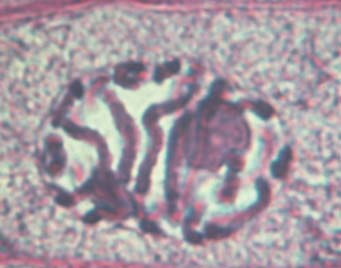
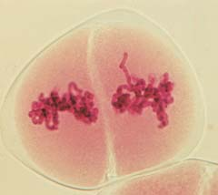

10 Cromosomas, mitosis y meiosis
213
Microscopia óptica de fl uorescencia de células pulmonares del tritón, en fase de mitosis (prometafase temprana). La envoltura nuclear ya ha desaparecido y ahora los microtúbulos del huso mitótico ( verde, debido a la tinción con un anticuerpo anti-beta tubulina conjugado con fl uoresceína) interactúan con los cromosomas ( azul, teñidos con un colorante fl uorescente).
Alexey Khodjakov, Wadsworth Center, Albany, NY
L
as células preexistentes se dividen para formar nuevas células. Este notable proceso le permite crecer a un organismo, reparar sus partes dañadas, y reproducirse. Las células sirven como el enlace esencial entre generaciones. Aún la célula más simple contiene la enorme cantidad de información genética codifi cada con gran precisión en la forma de ácido desoxirribonucleico (ADN). Una molécula de ADN individual está organizada en unidades de información llamadas genes , que controlan las actividades de la célula y son transmitidos a sus descendientes. Cuando una célula se divide, la información contenida en el ADN se debe copiar fi elmente y las réplicas son transmitidas a cada célula hija mediante una serie de etapas coreografi adas con precisión (vea la fotografía). El ADN es una molécula muy larga y delgada que podría enredarse y romperse fácilmente, sin embargo, el núcleo de una célula eucariota contiene esta extensa fi bra de ADN. En este capítulo se considera cómo las eucariotas acomodan el material genético, condensando cada molécula de ADN con proteínas para formar una estructura llamada cromosoma , cada uno de los cuales contiene cientos o miles de genes. La mitosis se considera, como el proceso altamente ordenado que asegura que una célula progenitora transmita una copia de cada cromosoma a cada una de sus dos células hijas. De esta manera, se conserva el número de cromosomas a través de sucesivas divisiones mitóticas. La mayoría de las células somáticas (células corporales) de las eucariotas se dividen por mitosis. La mitosis es un activo campo de investigación bio-
CONCEPTOS CLAVE
10.1 En las células eucariotas, el ADN está enrollado alrededor de proteínas específi cas para formar cromatina, que a su vez está plegada y empacada para constituir cromosomas individuales. 10.2 Durante la mitosis, los cromosomas se duplican y se separan (en dos grupos) que se distribuyen uniformemente en dos núcleos hijos. La mitosis es una parte importante del ciclo celular, que consiste en las etapas sucesivas por las que atraviesa una célula. 10.3 El programa genético interno interactúa con señales celulares externas para regular el ciclo celular. 10.4 La meiosis, que reduce la cantidad decromosomas de un número diploide a uno haploide, es necesaria para mantener el número normal de cromosomas cuando dos células se unen durante la reproducción sexual. La meiosis ayuda a incrementar la variación genética entre la descendencia. 10.5 La meiosis y la producción de gametos preceden a la fertilización en los ciclos de vida de organismos con reproducción sexual.
214 Capítulo 10
El ADN se condensa en forma altamente organizada en los cromosomas
Las células procariotas y eucariotas difi eren signifi cativamente en la cantidad y organización de las moléculas de ADN. La bacteria Escherichia coli normalmente contiene cerca de 4 × 10 6 pares de bases nucleótidas (casi 1.35 mm) en su molécula de ADN, que es simple o monocatenaria y de forma circular. En efecto, la longitud total de su ADN es alrededor de 1000 veces mayor que la longitud de la propia célula. Por lo tanto, la molécula de ADN es trenzada y plegada muy compactamente, con la ayuda de proteínas, para ajustarse al espacio dentro de la célula bacteriana (vea la fi gura 25-2). Una célula eucariota típica contiene mucho más ADN que una bacteria, y está organizado en el núcleo como múltiples cromosomas, que varían ampliamente en tamaño y número en diversas especies. Aunque un núcleo humano es casi del tamaño de una célula bacteriana grande, contiene más de 1000 veces la cantidad de ADN que se encuentra en la E . coli . La fi bra de ADN de una célula de esperma humano contiene cerca de 3 × 10 9 pares de bases nucleótidas; estirada de extremo a extremo, mediría casi 1 m de largo. Extraordinariamente, esta larga fi bra de ADN se ajusta en un núcleo con un diámetro de sólo 10 m m. ¿Qué hace una célula eucariota para condensar su ADN en los cromosomas? Este proceso se facilita mediante ciertas proteínas conocidas como histonas . 1 Las histonas presentan carga positiva porque contienen una alta proporción de aminoácidos con cadenas laterales básicas (vea el capítulo 3). Estas histonas se asocian con el ADN, que presenta una carga negativa debido a sus grupos fosfato, para formar estructuras llamadas nucleosomas . La unidad fundamental de cada nucleosoma consiste en una estructura de ocho moléculas de histonas (dos por cada uno de los cuatro tipos de histonas), semejantes a las perlas de un collar, con 146 pares de bases de ADN envueltas alrededor del núcleo proteínico, en forma de disco ( FIGURA 10-2 ).
lógica, y por una buena razón: errores en la mitosis pueden originar muchos desórdenes y enfermedades como el cáncer, una condición deteriorada en donde las células se dividen con una incontrolable rapidez, convirtiéndose en invasivas. Así, un más claro entendimiento de la mitosis tiene el potencial para mejorar el tratamiento de múltiples enfermedades. Por último, se analiza la meiosis , un proceso que reduce a la mitad el número de cromosomas. Los ciclos de vida sexual en eucariotas requieren meiosis. La reproducción sexual implica la fusión de dos células sexuales, o gametos , para formar un huevo fertilizado llamado cigoto . La meiosis hace posible que cada gameto sólo contenga la mitad del número de cromosomas de la célula progenitora , evitando así que los cigotos tengan el doble de cromosomas que sus progenitores.
10.1 CROMOSOMAS EUCARIOTAS
OBJETIVOS DE APRENDIZAJE
1 Analizar el signifi cado de los cromosomas en términos de la información que contienen. 2 Explicar cómo se condensa el ADN en los cromosomas de las células eucariotas.
Los principales portadores de información genética en las células eucariotas son los cromosomas , los cuales se fabrican dentro del núcleo celular. Aunque cromosoma signifi ca “cuerpo coloreado”, los cromosomas son prácticamente incoloros; el término se refi ere a la facilidad para ser teñidos por ciertos colorantes. En la década de 1880, los microscopios ópticos habían sido mejorados de manera tal que científi cos como el biólogo alemán Walther Fleming empezó a observar cromosomas durante la división celular. En 1903, el biólogo estadounidense Walter Sutt on y el biólogo alemán Th eodor Boveri notaron independientemente que los cromosomas eran los portadores físicos de los genes, correspondiente a aquellos factores genéticos que Gregor Mendel descubrió en el siglo xix (tema que se analiza en el capítulo 11). Los cromosomas están hechos de cromatina , un material que consiste en ADN y proteínas asociadas. Cuando una célula no está en proceso de división, los cromosomas están presentes pero en una forma extendida y parcialmente desenrrollada. La cromatina consiste en largos y delgados hilos aglomerados, con apariencia granular cuando se observan al microscopio electrónico (vea la fi gura 4-13). Durante la división celular, las fi bras de cromatina se condensan y los cromosomas se hacen visibles como diversas estructuras ( FIGURA 10-1 ).
El ADN está organizado en unidades de información llamadas genes
Un organismo puede tener miles de genes. Por ejemplo, los humanos tenemos cerca de 20,000 genes que codifi can proteínas. Como se verá en capítulos posteriores, el concepto de gen ha cambiado considerablemente desde que se inició la ciencia de la genética, pero siempre se ha centrado en el gen como una unidad de información. Para proveer información, es necesario portar una o más funciones específi cas de la célula; un gen afecta alguna característica específi ca del organismo. Por ejemplo, los genes determinan el color de los ojos en los humanos, la longitud de las alas en las moscas, y el color de las semillas en los guisantes.
1 Unos pocos tipos de células eucariotas carecen de histonas. Inversamente, las histonas están presentes en un grupo de procariotas, las arqueas (vea el capítulo 25).
10 μ m
Jan Hinsch/Photo Researchers, Inc.
FIGURA 10-1 Cromosomas En esta microscopia óptica de fl uorescencia se muestran los cromosomas humanos de una célula no identifi cada.
Cromosomas, mitosis y meiosis 215
El número de cromosomas y el contenido de información difi eren entre las especies
Cada individuo de una especie dada tiene un número característico de cromosomas en el núcleo de sus células somáticas (corporales). Sin em-
Aunque el nucleosoma originalmente se defi nió como una cuenta o perla(de un collar) más un segmento de ADN que lo une a una cuenta adyacente, ahora es más común que el término sólo se refi era a todo el paquete (es decir, a las ocho histonas y al ADN envuelto a su alrededor). Los nucleosomas funcionan como pequeños carretes, evitando que el ADN se enrede. En la FIGURA 10-3 puede verse la importancia de esa función, que ilustra la enorme longitud del ADN que se desenvuelve del cromosoma de un ratón después de que los investigadores eliminaron las histonas. El papel de las histonas no sólo es simplemente estructural, ya que su arreglo también afecta la actividad del ADN con el que están asociadas. Cada vez más se reconoce que las histonas son una parte importante de la regulación de la expresión genética, es decir, si los genes son o no activados. En el capítulo 14 se analiza la regulación genética mediante histonas. El enrollamiento del ADN en los nucleosomas representa el primer nivel de organización de la estructura cromosómica. La FIGURA 10-4 muestra las estructuras de nivel superior, donde la cromatina conduce a la formación de un cromosoma condensado. Los propios nucleosomas tienen un diámetro de 10 nm. La etapa de aglutinamiento de los nucleosomas ocurre cuando un quinto tipo de histona, conocida como histona H1 , se asocia con el ADN de unión, aglutinando los nucleosomas adyacentes para formar una fi bra de cromatina compacta de 30 nm. En la cromatina extendida, esas fi bras forman largos lazos enrrollados que se mantienen unidos por las proteínas de andamiaje , (diferentes a las histonas) ayudando a mantener la estructura cromosómica. Entonces los lazos de ADN interactúan para formar la cromatina condensada encontrada en un cromosoma. Los biólogos celulares han identifi cado un grupo de proteínas, colectivamente llamadas condensina , requeridas para la compactación cromosómica. La condensina se une al ADN y lo envuelve en lazos enrollados que son compactados en un cromosoma mitótico o meiótico.
Nucleosoma (10 nm de diámetro)
ADN enrollado alrededor de un grupo de moléculas de histona
ADN de unión
- Un modelo para la estructura del nucleosoma. Cada nucleosoma contiene un conjunto de ocho moléculas de histona (representadas con perlas o cuentas), que forman un centro proteínico alrededor del cual se enrolla el ADN de doble-cadena. El ADN que rodea a las histonas consiste en 146 pares de bases nucleótidas; el largo del otro segmento de ADN, que une los grupos de cuentas o perlas de nucleosomas es de casi 60 pares de nucleótidos.
Colas de las histonas
FIGURA 10-2 Nucleosomas
2 μ m
Lazos de ADN
Proteínas de andamiaje
Courtesy of U. Laemmli, from Cell 12:817, 1988. Copyright by Cell Press
FIGURA 10-3 MET de un cromosoma de ratón sin histonas Observe que las hebras o fi bras de ADN están densamente aglutinadas, aunque han sido liberadas de las proteínas histonas que las organizan en estructuras herméticamente enrolladas a su alrededor.
100 nm
- MET de nucleosomas del núcleo de una célula de pollo. Normalmente, los nucleosomas están aglutinados en forma muy compacta, pero el procedimiento de preparación de la muestra los ha esparcido, revelando las cadenas ADN de unión.
D. E. Olins and A. L. Olins
216 Capítulo 10
tienen entre 8 y 50 cromosomas por célula somática. Son poco comunes los números abajo y arriba de ese rango. El número de cromosomas que una especie tiene no indica la complejidad de la especie o su estado dentro de un dominio o reino en particular.
Repaso
■ ¿Cómo se llaman las unidades de información en los cromosomas? ¿De qué consisten esas unidades de información?
■ ¿Qué tan grande es la discrepancia entre la longitud de la fi bra de ADN y el tamaño del núcleo de las células eucariotas?
bargo, no es el número de cromosomas lo que hace única a cada especie sino la información específi ca de los genes. La mayoría de las células somáticas humanas tienen exactamente 46 cromosomas, pero los humanos no somos humanos sólo por tener 46 cromosomas. Otras especies, como el olivo, también tienen 46. Así mismo, algunas personas presentan una composición cromosómica anormal con más de 46 o menos (vea la fi gura 16-4). Otras especies tienen diferentes números de cromosomas. Ciertas especies de lombrices intestinales sólo tienen 2 cromosomas en cada célula, mientras que algunos cangrejos tienen cerca de 200, y algunos helechos tienen más de 1000. La mayoría de las especies animales y vegetales
Cuando una célula se prepara para dividirse, sus cromosomas se hacen más delgados y más cortos conforme se compactan sus largas fi bras de cromatina.
1400 nm
Cromatina condensada
700 nm
Cromosoma condensado
Nucleosomas
Nucleosomas aglutinados
Cromatina extendida
Fibra de 300 nm
Fibra de cromatina de 30 nm
2 nm
Doble hélice de ADN
10 nm
Proteína de andamiaje
ADN enrollado alrededor de un grupo o de moléculas de histona
Histona
(dominios en lazo)
© Hanka Steidle/Shutterstock
FIGURA 10-4 Animada Organización de un cromosoma eucariota
Este diagrama muestra cómo el ADN se va aglutinando hasta formar cromosomas metafase, altamente condensados. Primero, el ADN se envuelve alrededor de las proteínas histona para formar nucleosomas.
Después, los nucleosomas son compactados en fi bras de cromatina, que son enrollados por lazos de ADN, los cuales al compactarse forman fi nalmente los cromosomas condensados.
PUNTO CLAVE


Cromosomas, mitosis y meiosis 217
lulas que crecían activamente, una autorradiografía de película expuesta (vea la fi gura 2-3) mostró que una fracción de las células tenía granos de plata sobre sus cromosomas. Los núcleos de esas células eran radiactivos porque durante el experimento se había replicado el ADN. La replicación del ADN no estaba ocurriendo en las células que no presentaban cromosomas marcados radiactivamente. Por lo tanto, los investigadores infi rieron que la proporción de células marcadas con relación al número total de células da una estimación aproximada de la duración de la fase S respecto del resto del ciclo celular. Después de completar la fase S, la célula entra a una segunda fase o intervalo, conocida como fase G 2 . Durante este tiempo, aumenta la síntesis de proteínas, conforme se dan los pasos fi nales en la preparación de la célula para la división. En muchas células, la fase G 2 es corta con respecto a las fases G 1 y S. La fase M implica dos procesos principales, mitosis y citocinesis. La mitosis , corresponde a la división celular que produce dos núcleos con cromosomas idénticos a los del núcleo parental, e inicia al fi nal de la fase G 2 . La citocinesis, generalmente comienza antes de que la mitosis termine, y corresponde a la división del citoplasma celular para formar dos células hijas. La mitosis es un proceso continuo, pero para fi nes descriptivos, se divide en cinco etapas:
profase ¡ prometafase ¡ metafase ¡ anafase ¡ telofase
10.2 CICLO CELULAR Y MITOSIS
OBJETIVOS DE APRENDIZAJE
3 Identifi car las etapas del ciclo celular en las células eucariotas y describir sus principales eventos. 4 Describir la estructura de un cromosoma duplicado, incluidos las cromátidas hermanas, los centrómeros y los cinetocoros. 5 Explicar el signifi cado de la mitosis y describir el proceso.
Cuando las células alcanzan un cierto tamaño, generalmente paran de crecer o se dividen. No todas las células se dividen; algunas, como los glóbulos rojos y las células del músculo esquelético, normalmente no se dividen cuando maduran. Otras células experimentan una secuencia de actividades requeridas para su crecimiento y división celular. Y hay otro grupo de células, como los fi broblastos que sólo se dividen ocasionalmente cuándo han sufrido alguna lesión. Las etapas por las que pasa una célula en general desde su origen mediante una división celular hasta la siguiente división para formar dos células hijas se conoce colectivamente como ciclo celular . El tiempo del ciclo celular varía ampliamente, pero en las células vegetales y animales que crecen activamente, es alrededor de 8 a 20 horas. El ciclo celular consiste en dos fases principales, interfase y fase M, ambas se pueden distinguir bajo un microscopio óptico ( FIGURA 10-5 ).
Los cromosomas se duplican durante la interfase
La mayor parte de la vida celular se invierte en la interfase , el tiempo cuando no ocurre la división celular. Una célula se mantiene activa metabólicamente durante la interfase, sintetizando materiales necesarios (proteínas, lípidos, y otras moléculas biológicamente importantes) y creciendo. Así se presenta la secuencia de la interfase y de la fase M en el ciclo celular eucariota:
G 1 fase S fase G 2 fase mitosis y citocinesis
Interfase Fase M
Al tiempo entre el fi n de la mitosis y el inicio de la fase S se le llama fase G 1 ( G simboliza gap , un intervalo durante el que no ocurre síntesis de ADN). El crecimiento y el metabol ismo normal suceden durante la fase G 1 , que típicamente es la fase más larga. En general, las células que no están en proceso de división permanecen en este intervalo del ciclo celular y se dice que se encuentran en un estado llamado G 0 . Hacia el fi nal del G 1 , las enzimas requeridas para la síntesis de ADN se vuelven más activas. La síntesis de esas enzimas, junto con las proteínas que se necesitan para iniciar la división celular (que se analiza más adelante en este capítulo), permiten que la célula entre a la fase S. Durante la fase de síntesis , o fase S , el ADN se replica y las proteínas histonas son sintetizadas para que la célula pueda hacer una copia de sus cromosomas. ¿Cómo hicieron los investigadores para identifi car la fase S del ciclo celular? A principio de la década de 1950, los científi cos demostraron que las células que se preparaban para dividirse duplican sus cromosomas, en un intervalo de tiempo relativamente restringido, durante la interfase y no durante la temprana mitosis, como previamente se suponía. Estos investigadores utilizaron isótopos, como el 3 H, para sintetizar timidina radiactiva, un nucleótido que se incorpora específi camente al ADN, a medida que éste se sintetiza. Después de que la timidina ingresó durante un breve período (unos 30 minutos) a las cé-
El ciclo celular es la serie de eventos consecutivos que ocurren en la vida de una célula.
(G1
Primera fase o intervalo
(G2
Segunda fase o intervalo
S Fase de síntesis
FASE M (Mitosis y citocinesis)
I N
T
E
R
F
A
S
E
, gap 1)
, gap 2)
FIGURA 10-5 Animada Ciclo celular eucariota El ciclo celular incluye la interfase (G 1 , S y G 2 ) y la fase M (mitosis y citocinesis). El tiempo proporcional invertido en cada fase o etapa varía entre las especies, tipos celulares, y condiciones de crecimiento. Si el ciclo celular fuera un período de 12 horas, G 1 sería casi de 5 horas, S duraría 4.5 horas, G 2 sería de 2 horas, y la fase M sería de 30 minutos.
PUNTO CLAVE
218 Capítulo 10
sición de secuencias de ADN que las une herméticamente a proteínas específi cas. Por ejemplo, las cromátidas hermanas están físicamente unidas por un complejo proteínico de forma anular llamado cohesina . Las cohesinas se extienden a lo largo de las ramas de las cromátidas hermanas y están particularmente concentradas en el centrómero ( FIGURA 10-8 ). Estas cohesinas, que mantienen juntos a los cromosomas replicados desde su síntesis en la fase S en adelante, ayudan a garantizar una exacta segregación cromosómica durante la mitosis. Cada centrómero tiene asociado un cinetocoro , un complejo multiproteínico al que pueden unirse los microtúbulos . Esos microtúbulos contribuyen en la distribución cromosómica durante la mitosis, en la cual una copia de cada cromosoma es entregada a cada célula hija. Una célula en proceso de división se puede explicar mediante un globo, con una línea ecuatorial que determina el plano medio (plano ecuatorial) y dos polos opuestos. Esta terminología se aplica para todas las células independientemente de su forma real. Los microtúbulos irradian desde cada polo, y algunas de esas fi bras proteínicas se extienden hacia los cromosomas, formando el huso mitótico , una estructura que separa a los cromosomas duplicados durante la anafase ( FIGURA 10-9 ).
Estudie la FIGURA 10-6 mientras lee las siguientes descripciones de esas etapas conforme ocurren en una típica célula vegetal o animal.
Los cromosomas duplicados se hacen visibles al microscopio durante la profase
La primera etapa de la mitosis, la profase , inicia con la condensación de los cromosomas, cuando las largas fi bras de cromatina que forman los cromosomas comienzan un proceso de enrollado que las hace más cortas y más delgadas. Entonces la cromatina condensada se puede distribuir a las células hijas con menos riesgo de enredarse. Conforme progresa la profase, los cromosomas se hacen visibles al microscopio óptico, como cuerpos oscurecidos después de ser teñidos con ciertos colorantes. Ahora es evidente que cada cromosoma fue duplicado durante la fase S precedente y que consiste en un par de cromátidas hermanas , que contienen idénticas secuencias de la doble cadena de ADN. Cada cromátida incluye una región estrecha llamada centrómero . Las cromátidas hermanas están unidas herméticamente en la vecindad de sus centrómeros ( FIGURA 10-7 ). La base química para esta estrecha asociación en los centrómeros se debe a la precisa compo-
La célula realiza actividades vitales normales. Los cromosomas se duplican. (b) Las largas fibras de cromatina condensada se presentan como cromosomas mitóticos compactos, cada uno consiste en dos cromátidas unidas a sus centrómeros. El citoesqueleto se desensambla o desintegra, y el huso mitótico se forma entre los centríolos, que se han movido a los polos de la célula. La envoltura o membrana nuclear empieza a fragmentarse y a desaparecer.
Los microtúbulos del huso se unen a los cinetocoros de los cromosomas. Los cromosomas empiezan a moverse hacia el plano medio de la célula.
Nucléolo
INTERFASE PROFASE PROMETAFASE
Fragmentos de envoltura nuclear
Cromátidas hermanas de un cromosoma duplicado
Cromatina
Núcleo
Envoltura nuclear
Membrana plasmática Centríolos
Huso mitótico en desarrollo
Cinetocoro
Microtúbulos del huso
Todos excepto prometafase: Carolina Biological Supply/ Phototake; Prometaphase: Ed Reschke/Peter Arnold, Inc.
FIGURA 10-6 Animada Interfase y las etapas de la mitosis Las MO muestran células vegetales, que perdieron los centríolos. Los esquemas representan células animales en general con un número diploide de cuatro cromosomas; se han exagerado los tamaños de los núcleos y de los cromosomas para mostrar las estructuras con mayor claridad.

Cromosomas, mitosis y meiosis 219
Los extremos menos de esos microtúbulos están en los polos, y los extremos más se extienden al plano medio de la célula. Sería útil revisar la fi gura 4-24, la cual muestra la organización de los microtúbulos como polímeros lineales de la proteína tubulina . La organización y función del huso requiere la presencia de proteínas motoras y una variedad de moléculas de señalización. Las células animales difi eren de las células vegetales en los detalles de la formación del huso mitótico. Ambos tipos de células en proceso de división, presentan un polo con una región, denominada el centro organizador de microtúbulos , desde el cual se extienden los microtúbulos que forman el huso mitótico. El microscopio electrónico muestra que en ciertas células vegetales, los centros de organización microtubular consisten en fi brillas con poca o ninguna estructura diferenciable. En cambio, las células animales tienen un par de centríolos en el medio de cada centro organizador de microtúbulos(vea la fi gura 4-26). Los centríolos están rodeados por fi brillas que constituyen el material pericentriolar .
Los cromosomas se alinean en el plano medio de la célula. Los microtúbulos del huso conectan cada cromosoma a ambos polos.
Las cromátidas hermanas se separan en sus centrómeros. Cada grupo de cromosomas se mueve hacia el polo opuesto de la célula. Los polos del huso se apartan.
Los cromosomas se agrupan en los polos, vuelven a su estado relajado o de reposo, y se empiezan a formar las envolturas nucleares. La citocinesis produce dos células hijas.
Huso
Plano medio de la célula (placa metafase) Cromosomas hijas
METAFASE ANAFASE TELOFASE
Surco divisor
Reelaboración de la envoltura nuclear
Par de centríolos en el polo del huso
25 μ m
FIGURA 10-6 Continuación ▲
1.0 μ m
Cromátidas hermanas
Región centrómera
Microtúbulos
Cinetocoro
E. J. DuPraw
FIGURA 10-7 Cromátidas hermanas y centrómeros Cada una de las cromátidas hermanas consiste en fi bras de cromatina enrolladas herméticamente, y están fuertemente asociadas en sus regiones centrómeras, indicadas por los paréntesis. Un cinetocoro está asociado con cada centrómero, que sirve como sitio de adhesión microtubular. Los cinetocoros y los microtúbulos no son visibles en esta MET de un cromosoma en metafase.
▲
220 Capítulo 10
Cada uno de los dos centríolos se duplica durante la fase S de la interfase, produciéndose dos pares de centríolos. Posteriormente en la profase, los microtúbulos se irradian a partir del material pericentriolar que rodea a los centríolos; esos cúmulos de microtúbulos se conocen como ásteres. Los dos ásteres migran a lados opuestos del núcleo, estableciendo los dos polos del huso mitótico.
La prometafase inicia cuando se rompe la envoltura nuclear
Durante la prometafase se fragmenta la envoltura nuclear, permitiendo que los microtúbulos del huso se conecten con los cromosomas; las unidades fragmentadas de la envoltura nuclear son atrapadas en vesículas para ser reutilizadas posteriormente, en la relaboración de las envolturas nucleares de las células hijas. El nucléolo se contrae y en general desaparece, y el huso mitótico queda completamente formado. Al inicio de la prometafase, los cromosomas duplicados son dispersados a través de la región nuclear (vea la fotografía en la introducción a este capítulo, que muestra la prometafase temprana). Los microtúbulos del huso se alargan y se contraen al moverse hacia el centro de la célula en un proceso de “búsqueda y captura”. Estos movimientos dinámicos aleatorios dan la apariencia de que están “buscando” a los cromosomas. Si se acerca un microtúbulo a un centrómero, entonces es “capturado” por uno de los cinetocoros de un cromosoma duplicado. El ahora atado cromosoma continúa moviéndose hacia el plano medio de la célula, entonces el cinetocoro desunido de su cromátida hermana queda conectado a un microtúbulo del otro polo de la célula. Durante los movimientos de los cromosomas hacia el plano medio de la célula, los microtúbulos largos son acortados mediante la eliminación de subunidades de tubulina, y los microtúbulos cortos son alargados por la adición de subunidades de tubulina. La evidencia indica que el acortar y alargar sucede en el extremo del cinetocoro (extremo más) del microtúbulo, y no en la terminal polar del huso (extremo menos). Este acortamiento y alargamiento ocurre mientras el microtúbulo del huso permanece fi rmemente atado al cinetocoro. Las proteínas motoras localizadas en los cinetocoros pueden estar implicadas en esta atadura del microtúbulo del huso. Estas proteínas motoras pueden trabajar en forma similar a la quinesina motora mostrada en la fi gura 4-25. Para resumir los eventos de la prometafase, las cromátidas hermanas de cada cromosoma duplicado quedan unidas, en sus cinetocoros, a los microtúbulos del huso extendiéndose desde polos opuestos de la célula, y los cromosomas empiezan a moverse hacia el plano medio de la célula. Conforme la célula avanza de la prometafase a la metafase, las cohesinas se disocian de los brazos de las cromátidas hermanas, liberándolas entre sí, aunque algunas cohesinas se mantienen en la vecindad del centrómero.
Durante la metafase los cromosomas duplicados se alinean sobre el plano medio
Durante la metafase , todos los cromosomas de la célula se alinean en el plano medio de la célula, o placa metafase . Como ya se mencionó, una de las dos cromátidas hermanas de cada cromosoma está unida por su cinetocoro a los microtúbulos de un polo, y su cromátida hermana es capturada por su cinetocoro a microtúbulos del polo opuesto. El huso mitótico tiene tres tipos de microtúbulos: microtúbulos polares, microtúbulos cinetocoros y microtúbulos astrales (vea la fi gura 10-9). Los microtúbulos polares , también conocidos como microtúbulos no cinetocoros , se extienden desde cada polo hasta la región ecuatorial,
Los microtúbulos del huso terminan en el material pericentriolar, pero ellos realmente no tocan los centríolos. Los biólogos celulares han pensado que la formación del huso en células animales requiere centríolos, pero es probable que su participación sea coincidencia. La evidencia actual sugiere que los centríolos organizan el material pericentroliar y aseguran su duplicación cuando los centríolos se duplican.
Cuando los cromosomas se duplican, las cromátidas hermanas están inicialmente unidas entre sí por los complejos proteíni cos denominados cohesinas. Los enlaces de cohesina están particularmente concentrados en la vecindad del centrómero.
Cromátidas hermanas del cromosoma duplicado
Cinetocoro
Complejos de cohesina en la región del centrómero
Complejos de cohesina Profase
Metafase
Anafase
Cromosomas hijos
Microtúbulos del huso
1
2
Al progresar la mitosis, las cohesinas se disocian de los brazos de los cromosomas duplicados.
Entonces las cohesinas se disocian en el centrómero, para permitir que cada par de cromosomas hijos se separen durante la anafase.
FIGURA 10-8 Cohesinas
PUNTO CLAVE
Cromosomas, mitosis y meiosis 221
gráfi cas electrónicas. Los investigadores también emplean microláseres, o dispositivos mecánicos conocidos como micromanipuladores para perturbar físicamente a células vivas que se están dividiendo. Un investigador hábil puede mover los cromosomas, romper sus conexiones con los microtúbulos, y aún eliminarlos totalmente de la célula. Los microtúbulos no tienen propiedades elásticas o contráctiles. ¿Entonces cómo contribuyen en el desplazamiento de los cromosomas? ¿Son empujados o jalados, o quizás operan otras fuerzas? Los microtúbulos son estructuras dinámicas, con subunidades de tubulina que pueden ser eliminadas constantemente de sus extremos y agregadas a ellos, conforme a la necesidad de la célula. La evidencia indica que durante la anafase, los microtúbulos cinetocoro son acortados, o despolimerizados , en su extremo más , es decir, el más cercano al plano medio de la célula ( FIGURA 10-10 ). Este mecanismo de acortamiento jala a los cromosomas hacia los polos. Un segundo mecanismo también desempeña un papel en la separación de los cromosomas. Durante la anafase el huso se alarga como un todo, al menos parcialmente porque los microtúbulos polares que salen de polos opuestos están asociados con proteínas motoras que les permiten deslizarse unos sobre otros en el plano medio. El deslizamiento disminuye el grado de traslape, por lo tanto “empujándolos” hacia los polos opuestos. Este mecanismo causa indirectamente que los cromosomas se vayan apartando, debido a que ellos están unidos a los polos mediante los microtúbulos cinetocoro.
Durante la telofase, se forman dos núcleos separados
Durante la etapa fi nal de la mitosis, telofase , los cromosomas llegan a los polos y existe un retorno a las condiciones tipo interfase.
en donde se traslapan e interactúan con microtúbulos no cinetocoros del polo opuesto. Los microtúbulos cinetocoros se extienden desde cada polo y se unen a los cinetocoros de los cromosomas. Los microtúbulos astrales son los microtúbulos cortos que forman ásteres en cada polo. Cada cromátida es completamente condensada y aparece distinta durante la metafase. Como los cromosomas individuales son más visibles en la metafase que en cualquier otro momento, el cariotipo , o composición cromosómica, en general se revisa en esta etapa para identifi car anormalidades cromosómicas (vea el capítulo 16). Al igual que las transiciones celulares mitóticas de la metafase a la anafase, las restantes proteínas de cohesina que unen a las cromátidas hermanas en su centrómero se disocian.
Durante la anafase, los cromosomas se mueven hacia los polos
La anafase se inicia conforme se separan las cromátidas hermanas. Una vez que las cromátidas ya no están unidas a sus duplicados, entonces a cada cromátida se le llama cromosoma . Los cromosomas ahora separados se mueven a polos opuestos, empleando como pistas a los microtúbulos del huso. Los cinetocoros, aún unidos a los microtúbulos cinetocoro, encabezan la ruta, con los brazos del cromosoma quedando detrás. La anafase termina cuando todos los cromosomas llegan a los polos. Los biólogos celulares están haciendo un signifi cativo progreso en la comprensión del mecanismo global del movimiento cromosómico en la anafase. Los movimientos cromosómicos se estudian en diversas formas. El número de microtúbulos en una etapa particular o después de ciertos tratamientos se determina analizando cuidadosamente las micro-
CNRI/Phototake, NYC
Microtúbulos astrales
Microtúbulos cinetocoros (unidos por fibras del huso cromosómico)
Microtúbulo polar (no cinetocoro)
Centríolos
Material pericentriolar
10 μ m
Placa metafase (plano medio de la célula)
Un extremo de cada microtúbulo de esta célula animal está asociado con uno de los polos. Los microtúbulos astrales ( verde ) se irradian en todas las direcciones, formando el áster. Los microtúbulos cinetocoro ( rojo ) conectan a los cinetocoros con los polos, y los microtúbulos polares (no cinetocoros) ( azul ) se traslapan en el plano medio.
Esta MO de fluorescencia de una célula animal en la metafase muestra un huso bien definido y ásteres (cromosomas, naranja ; microtúbulos, verde ).
Cromátidas hermanas
FIGURA 10-9 Huso mitótico
222 Capítulo 10
La citocinesis forma dos células hijas separadas
La citocinesis , la división del citoplasma para producir dos células hijas, es el último paso en la fase M y por lo común se traslapa con la mitosis, iniciando en general durante la telofase. La citocinesis de una célula animal o fúngica (levadura, por ejemplo) inicia como un anillo contráctil de actomiosina que está integrado y unido a la membrana plasmática. El anillo contráctil va encerrando a la célula en la región ecuatorial, en ángulo recto al huso ( FIGURA 10-11a ). El anillo contráctil consiste en una asociación entre fi lamentos de actina y miosina; se piensa que la acti vidad motora de la miosina mueve los fi lamentos de la actina para generar la constricción, similar a la manera en que la actina y la miosina causan la contracción muscular (vea la fi gura 40-10). El anillo se contrae, produciendo un surco divisor que gradualmente se profundiza y a la larga separa al citoplasma en dos células hijas, cada una con un núcleo completo. Entonces el anillo contráctil se desintegra. En las células vegetales, la citocinesis ocurre al formarse una placa celular ( FIGURA 10-11b ), una partición construida en la región ecuatorial del huso que crece lateralmente hacia la pared celular. La placa celular se forma como una línea de vesículas originadas en el complejo de Golgi . Las vesículas contienen materiales con el fi n de construir tanto la pared celular primaria para cada célula hija como una membrana, la lamela media que cumple la función de cemento a fi n de mantener juntas las paredes de la célula primaria. Las membranas vesiculares se fusionan hasta convertirse en la membrana plasmática de cada célula hija. Las células multinucleadas se forman si la mitosis no es seguida por la citocinesis; ésta es una condición normal para ciertos tipos de células. Por ejemplo, el cuerpo de los mohos mucilagionosos plasmodiales (de fango) consiste en una masa de citoplasma multinucleada (vea la fi gura 26-19a).
La mitosis produce dos células genéticamente idénticas a la célula parental
La importante regularidad del proceso de división celular garantiza que cada núcleo hija reciba exactamente el mismo número y tipos de cromosomas que tenía la célula parental o progenitora. Así, con unas pocas excepciones, cada célula de un organismo multicelular tiene la misma composición genética. Si una célula recibe más o menos que el número característico de cromosomas debido a un mal funcionamiento del proceso de división celular, la célula resultante puede mostrar anormalidades signifi cativas y es frecuente que no sobreviva. La mitosis asegura la ordenada distribución de los cromosomas (y de centríolos, si están presentes), ¿pero qué ocurre con la variedad de orgánulos citoplásmicos? Por ejemplo, todas las células eucariotas, incluidas células vegetales, requieren mitocondrias. Análogamente, las células vegetales fotosintéticas no pueden efectuar la fotosíntesis sin cloroplastos. Esos orgánulos contienen su propio ADN y parecen formarse por la división de mitocondrias previamente existentes o plástidos o sus precursores. Este proceso de división no mitótica es similar a la división celular procariótica (que se analiza en la próxima sección) y generalmente ocurre durante la interfase. Ya que muchas copias de cada orgánulo están presentes en cada célula, entonces los orgánulos se distribuyen proporcionalmente con el citoplasma que cada célula hija recibe durante la citocinesis.
Sin núcleos, las procariotas se dividen por fi sión binaria
Las bacterias y las arqueas contienen mucho menos ADN que la mayoría de las células eucariotas, pero igualmente es un proceso asombroso de
Los cromosomas se relajan mediante un desenrollamiento parcial. Se forma una nueva envoltura nuclear alrededor de cada conjunto de cromosomas, formada al menos en parte por pequeñas vesículas y otros componentes derivados de la envoltura nuclear previa. Los microtúbulos del huso desaparecen y se reorganizan los nucléolos.
EXPERIMENTO CLAVE
PREGUNTA: ¿Los microtúbulos del huso mueven los cromosomas mediante el acortamiento (es decir, despolimerización) de los microtúbulos hacia los polos del huso, o hacia los extremos del cinetocoro?
HIPÓTESIS: Los microtúbulos del huso mueven los cromosomas hacia los polos del huso mediante un mecanismo en el que los microtúbulos son acortados en los extremos del cinetocoro.
EXPERIMENTO: Los microtúbulos en las células de riñón porcino (cerdo) en la anafase temprana se marcaron con un colorante fl uorescente, que se adhiere específi camente a estas estructuras.
Los investigadores marcaron los microtúbulos empleando microláser para blanquear el colorante, pero dejando intactos a los microtúbulos.
RESULTADOS Y CONCLUSIÓN: Los cromosomas se mueven hacia las áreas blanqueadas de los microtúbulos del huso, lo cual indica un acortamiento de los microtúbulos cerca del cinetocoro. Los microtúbulos en los extremos polares no se acortaron.
Los cromosomas se movieron hacia los polos, permaneciendo anclados a los microtúbulos cinetocoro mientras que las subunidades de tubulina eran eliminadas de estos extremos.
FIGURA 10-10 Animada Fotoblanqueamiento con microláser para determinar cómo se transportan los cromosomas hacia los polos del huso durante la anafase.
Cromosomas, mitosis y meiosis 223
miaje que mantiene a casi 10 diferentes proteínas alrededor de la sección media de la célula. Allí la membrana plasmática crece hacia adentro (se invagina) entre las dos copias de ADN, dividiendo a la mitad el citoplasma de la célula, y una nueva pared celular transversal es sintetizada entre las dos células. (La reproducción bacteriana se analiza en forma más amplia en el capítulo 25).
Repaso
■ ¿Cuáles son las etapas del ciclo celular? ¿Durante cuál etapa se replica el ADN?
■ ¿Cuáles son las etapas de la mitosis y qué ocurre en cada etapa?
10.3 REGULACIÓN DEL CICLO CELULAR
OBJETIVO DE APRENDIZAJE
6 Explicar algunas maneras en las que se controla el ciclo celular.
Cuando las condiciones son óptimas, algunas células procariotas pueden dividirse cada 20 minutos. Generalmente, los tiempos de generación de células eucariotas son mucho mayores, aunque la frecuencia de división celular varía ampliamente entre diferentes especies y entre distintos tejidos de la misma especie. En general algunas células musculares esqueléticas detienen su división después de los primeros meses de vida, mientras que las células sanguíneas, las células del tracto digestivo y las células de la piel se dividen con frecuencia durante toda la vida del organismo. Bajo óptimas condiciones de nutrición, temperatura y pH, la duración del ciclo celular eucariota es constante para cualquier tipo dado de célula. Sin embargo, bajo condiciones menos favorables el tiempo de generación puede ser mucho mayor. Ciertas moléculas regulatorias que controlan el ciclo celular son comunes a todas las eucariotas. Genéticamente programadas en el núcleo
distribución precisa del material genético entre las dos células hijas. Normalmente el ADN procariota consiste en un solo cromosoma circular que está condensado con proteínas asociadas. Aunque la distribución de material genético en células procariotas que se dividen es un proceso más simple que la mitosis, sin duda esta distribución es muy precisa, para garantizar que las células hija sean genéticamente idénticas a la célula parental. Las procariotas se reproducen asexualmente, en general mediante fi sión binaria , un proceso en que una célula se divide en dos células hijas ( FIGURA 10-12 ). La molécula de ADN circular se replica y da por resultado dos cromosomas idénticos. La replicación del ADN se inicia en un lugar exclusivo del cromosoma bacteriano, llamado origen de replicación . La síntesis de ADN procede desde ese punto en ambas direcciones hasta que fi nalmente se encuentran (vea la fi gura 12-16a). En seguida de la replicación, los cromosomas hijas se separan y se mueven a extremos opuestos de la célula alargada. La citocinesis entre los cromosomas hijas se controla por el anillo Z , una proteína de anda-
Núcleo
Surco divisor
Anillo contráctil de actomiosina
10 μ m
5 μ m
Formación de placa celular
Las vesículas se reúnen sobre el plano medio
Finalmente se forma una gran vesícula
Nuevas paredes celulares (a partir del contenido vesicular)
Nuevas membranas plasmáticas (de las membranas vesiculares)
Membrana plasmática
Las pequeñas vesículas se fusionan formando grandes vesículas
Pared celular
Formación de la placa celular
MET de la región ecuatorial de una célula animal cultivada, que experimenta citocinesis. Observe el surco divisor. Las células fúngicas en división también presentan un anillo contráctil que causa citocinesis.
La formación de la placa celular durante la citocinesis en una célula vegetal. La MET muestra una célula de la hoja de arce ( Acer saccharinum ) que experimenta citocinesis.
T. E. Schroeder/Biological Photo Service
E. H. Newcomb y B. A. Palevitz/Biological Photo Service
FIGURA 10-11 Animada Citocinesis en células animales y vegetales Los núcleos en ambas MET están en la telofase. Los dibujos muestran relaciones 3-D.

224 Capítulo 10
fase podría ser iniciada de manera muy temprana, antes de que todos los cromosomas estuvieran apropiadamente unidos a las fi bras del huso. Las células hijas resultantes podrían tener muy pocos o muchos cromosomas. Un número anormal de cromosomas está asociado con el síndrome de Down y con múltiples cánceres. La FIGURA 10-14 muestra algunas de las moléculas claves implicadas en la regulación del ciclo celular. Entre ellas están las proteínas cinasas o quinasas , enzimas que activan o desactivan a otras proteínas mediante su fosforilación (agregando grupos fosfatos). Las proteínas cinasas implicadas en el control del ciclo celular son las cinasas dependientes de ciclina (Cdk) . La actividad de varias Cdk aumenta y después decrece conforme la célula se mueve por el ciclo celular. Las Cdk están activas sólo cuando están unidas herméticamente a las proteínas regulatorias llamadas ciclinas . Las ciclinas se nombran así porque sus niveles fl uctúan predeciblemente durante el ciclo celular (es decir, ellas “ciclan”, o son alternativamente sintetizadas y degradadas como parte del ciclo celular). Tres científi cos que empezaron su investigación durante las décadas de 1970 y 1980 sobre las funciones de las proteínas cinasas y ciclinas en el ciclo celular (Leland Hartwell de Estados Unidos, y Paul Nurse y Tim Hunt de Gran Bretaña) ganaron el Premio Nobel en Fisiología o Medicina en 2001. Sus descubrimientos fueron citados como importantes no sólo al trabajar los detalles del fundamental proceso celular de la mitosis, sino también en la comprensión de por qué las células cancerosas se dividen cuando no deberían de hacerlo. Por ejemplo, con frecuencia los niveles de ciclina son más altos que lo normal en las células cancerosas humanas. Cuando una Cdk específi ca se asocia con una ciclina específi ca, forma un complejo ciclina-Cdk . Los complejos ciclina-Cdk fosforilan enzimas y a otras proteínas. Algunas de esas proteínas se activan al ser fosforiladas, pero otras se desactivan. Por ejemplo, se piensa que la fosforilación de la proteína p27, conocida como una importante inhibidora de la división celular, inicia la degradación de la proteína. Conforme varias enzimas son activadas o desactivadas mediante fosforilación, las actividades de la célula cambian. Así, una disminución del nivel de p27 en la célula hace que una célula que ha cesado la división, la reanude. Las células eucariotas forman cuatro importantes complejos ciclinaCdk: G 1 -Cdk, G 1 /S-Cdk, S-Cdk, y M-Cdk. Cada complejo G 1 -Cdk prepara a la célula para pasar de la fase G 1 a la fase S, y entonces G 1 /S-Cdk obliga a la célula a realizar la replicación de ADN. El M-Cdk promueve los eventos de la mitosis, incluida la condensación cromosómica, la fragmentación de la envoltura nuclear, y la formación del huso mitótico. El M-Cdk también activa a otro complejo enzimático, el complejo promotor de la anafase (APC) , hacia el fi nal de la metafase. El APC ini-
de la célula, esas moléculas regulatorias son componentes del sistema de control del ciclo celular que se encuentra en organismos tan diversos como levaduras, almejas, ranas, humanos y plantas. Las moléculas regulatorias desencadenan una secuencia específi ca de eventos durante el ciclo celular. Debido a que el ciclo celular consiste en cientos de eventos secuenciales que proceden de manera ordenada, una falla en el control cuidadoso de esos eventos puede tener consecuencias desastrosas. Los mecanismos de control en el programa genético, llamados puntos de control del ciclo celular , bloquean temporalmente eventos clave que deben ocurrir ordenadamente durante el ciclo celular. Los puntos de control del ciclo celular aseguran que todos los eventos de una etapa particular sean completados antes del inicio de la siguiente etapa ( FIGURA
10-13 ). Los puntos de control son desactivados después de que han hecho su labor para que así el ciclo celular pueda continuar. Los genes que codifi can las moléculas implicadas en los puntos de control son críticamente importantes para el ciclo celular. Si uno de estos genes es defectuoso, esto puede conducir a cáncer o alguna otra seria enfermedad. Considere qué podría ocurrir si las moléculas de punto de control en la metafase-anafase fueran no funcionales. En este caso, la ana-
La fi sión binaria es una secuencia de eventos, precisamente realizada, que garantiza que cada célula hija bacteriana tiene idéntico material genético.
Membrana plasmática Cromosoma bacteriano
La replicación del ADN inicia en un sitio único (origen de replicación) del cromosoma bacteriano
La replicación continúa, conforme la replicación de enzimas trabaja en ambas direcciones desde el sitio donde inició la replicación.
La replicación es completada, y se separan los cromosomas hijas. El anillo Z forma una sección media en la célula. La célula empieza a dividirse, conforme la membrana plasmática crece hacia adentro (se invagina). Se forma una nueva pared celular.
Se completa la fisión binaria. Resultan dos células hijas idénticas.
Célula bacteriana
Pared celular
Origen de replicación
Dos copias de ADN bacteriano
Región del cromosoma sin réplica
Anillo Z
Dos células bacterianas idénticas
1
2
3
4
Nuevas paredes celulares
FIGURA 10-12 Fisión binaria El cromosoma bacteriano es mucho más largo que lo que aquí se muestra y está unido a la membrana plasmática en un lugar (que no se muestra).
PUNTO CLAVE
Cromosomas, mitosis y meiosis 225
células animales. De los aproximadamente 50 factores de crecimiento proteínicos conocidos, algunos actúan sólo sobre tipos específi cos de células, mientras que otros actúan sobre un amplio rango de tipos celulares. Por ejemplo, los efectos del factor de crecimiento eritropoyetina se limitan a células que se desarrollarán en eritrocitos, pero el factor de crecimiento epidérmico estimula la división de múltiples tipos celulares. Muchos tipos de células cancerosas se dividen en ausencia de factores de crecimiento.
Repaso
■ ¿Qué son los puntos de control del ciclo celular?
■ ¿Cuáles son los dos controles moleculares que desencadenan la aparición de diferentes etapas del ciclo celular?
10.4 REPRODUCCIÓN SEXUAL Y MEIOSIS
OBJETIVOS DE APRENDIZAJE
7 Diferenciar entre reproducción asexual y sexual. 8 Distinguir entre células haploides y diploides y defi nir los cromosomas homólogos . 9 Explicar el signifi cado de la meiosis y describir el proceso. 10 Comparar la mitosis y la meiosis, enfatizando los distintos resultados.
cia la anafase al permitir la degradación de las cohesinas y de otras proteínas que mantienen juntas a las cromátidas hermanas durante la metafase. Como resultado, las cromátidas hermanas se separan en dos cromosomas hijas. En este punto, la ciclina se degrada a niveles muy bajos y decae la actividad del M-Cdk, permitiendo que el huso mitótico sea desintegrado y que la célula pueda salir de la mitosis. Ciertos fármacos pueden parar el ciclo celular en un punto de control específi co. Algunos de éstos frenan la síntesis de ADN, mientras que otros inhiben la síntesis de proteínas que controlan el ciclo o inhiben la síntesis de proteínas estructurales que contribuyen al huso mitótico. Debido a que uno de los aspectos distintivos de la mayoría de las células cancerosas es su alta rapidez de división celular con respecto a la mayor parte de las células somáticas normales, las células cancerosas son grandemente afectadas por esos fármacos. Muchos efectos laterales de ciertos fármacos anticancerosos (como náusea y pérdida de cabello) se deben a los efectos de los fármacos sobre las células normales que se dividen rápidamente en el sistema digestivo y en los folículos del cabello. En las células vegetales, ciertas hormonas estimulan la mitosis. Éstas incluyen a las citoquininas , un grupo de hormonas vegetales que promueven la mitosis en el crecimiento normal y en la curación de heridas (vea el capítulo 38). Similarmente, las hormonas animales, como los esteroides, estimulan el crecimiento y la mitosis (vea el capítulo 49). Los factores de crecimiento proteínicos, que son activos en concentraciones extremadamente bajas, estimulan la mitosis en algunas
Cuando una célula no ha completado los pasos que lo conducen a un punto de control del ciclo celular, ese punto está activo y detiene el avance del ciclo celular. Cuando se completan los pasos necesarios, el punto de control se desactiva, y el ciclo celular continúa.
1
3 2
G1 (Primera fase o intervalo)
G2 (Segunda fase o intervalo)
S (Fase de síntesis)
Punto de control G de control clave asegura que la célula tenga los factores de crecimiento necesarios, nutrientes, y enzimas para sintetizar ADN. Sin las señales apropiadas de que la célula está lista para seguir, el punto de control no permitirá que inicie la síntesis de ADN.
1
Punto de control de la metafase-anafase: Algunas veces se llama punto de control del huso , este punto de control se presenta al final de la metafase y evita que suceda la anafase hasta que todos los cinetocoros estén apropiadamente unidos a las fibras del huso a lo largo del plano medio de la célula. Punto de control G del ciclo celular asegura que la replicación del ADN esté finalizada antes de que la célula inicie la mitosis. Si una célula se ha dañado o no ha replicado ADN, entonces el punto de control no permitirá que la célula experimente la mitosis.
2 2
3
1 -S: El primer punto
M: Este punto de control
FIGURA 10-13 Puntos de control claves en el ciclo celular El ciclo celular consiste en cientos de eventos secuenciales. Las barras rojas muestran tres importantes puntos de control que verifi can que los pasos previos hayan sido completados para que las siguientes etapas puedan suceder. Cada punto de control se desactiva después de que ha efectuado su función, permitiendo que continúe el ciclo celular.
PUNTO CLAVE
226 Capítulo 10
desventaja de la reproducción sexual es que algunos descendientes con una diferente combinación de rasgos pueden ser menos aptos que sus padres para sobrevivir. Existe un problema potencial en la reproducción sexual eucariota: si cada gameto tuvo el mismo número de cromosomas que la célula padre que lo produjo, entonces el cigoto tendría el doble de cromosomas. Esta duplicación ocurriría generación tras generación. ¿Qué hacen los organismos para evitar producir cigotos con números crecientes de cromosomas? Para responder a esta pregunta, se necesita más información sobre los tipos de cromosomas que se encuentran en las células. Normalmente, en una célula somática vegetal o animal cada cromosoma tiene un cromosoma pareja. Los dos compañeros, llamados cromosomas homólogos , son similares en tamaño, forma, y en la posición de sus centrómeros. Además, procedimientos especiales para marcar cromosomas producen un patrón característico de bandas evidente en los miembros de cada par cromosómico. En muchas especies, los cromosomas varían lo sufi ciente en su estructura de tal manera que los biólogos pueden distinguir los distintos cromosomas y observar los pares homólogos. Los 46 cromosomas en células humanas constituyen 23 pares homólogos. La característica más importante de los cromosomas homólogos es que tienen información sobre los mismos rasgos genéticos, aunque esta información no es necesariamente idéntica. Por ejemplo, cada miembro de un par homólogo puede portar un gen que especifi ca la estructura de la hemoglobina. Pero un miembro puede tener la información para la
Aunque los detalles del proceso reproductivo varían mucho entre los diferentes tipos de eucariotas, los biólogos distinguen dos tipos básicos de reproducción: asexual y sexual. En la reproducción asexual sólo se rompe, brota o fragmenta un solo progenitor para producir dos o más individuos. En la mayor parte de los tipos de reproducción asexual eucariota, todas las células son el resultado de divisiones mitóticas, de manera que sus genes y rasgos heredados son semejantes a los del progenitor. A este grupo de organismos genéticamente idénticos se le llama clon . En la reproducción asexual, los organismos que están bien adaptados a su ambiente producen nuevas generaciones de organismos similarmente adaptados. La reproducción asexual ocurre de manera rápida y efi ciente, en parte porque el organismo no necesita invertir tiempo y energía para encontrar una pareja. En cambio, la reproducción sexual implica la unión de dos células sexuales, o gametos , para formar una sola célula llamada cigoto . En general dos padres distintos contribuyen con los gametos, pero en algunos casos un solo padre aporta ambos gametos. En el caso de animales y plantas, las células huevo y espermas son los gametos, y el huevo fertilizado es el cigoto. La reproducción sexual da como resultado variaciones genéticas entre la descendencia. (En este capítulo y en el capítulo 11 se analiza cómo se origina esta variación genética). Debido a que la descendencia producida por reproducción sexual no es genéticamente idéntica a sus padres o entre sí, algunos descendientes pueden ser más capaces de sobrevivir a los cambios ambientales que sus padres. Sin embargo, una
Las quinasas dependientes de ciclina (Cdk) controlan la fosforilación de otras proteínas, así que regulan las transiciones entre las fases del ciclo celular.
G1
G2
S
M
Ciclina degradada
Cdk
Ciclina
Cdk M-Cdk (desencadena la fase M)
La ciclina se sintetiza y se acumula.
La Cdk se asocia con la ciclina, formando M-Cdk, un complejo ciclina–Cdk.
La M-Cdk fosforila proteínas, activando aquellas que facilitan la mitosis y desactivando las que inhiben la mitosis.
Un complejo de enzimas activadas reconoce una secuencia de aminoácidos específica en la ciclina y la marca para su destrucción. Cuando la ciclina se degrada, se termina la actividad de la M-Cdk, y las células formadas por mitosis pasan a G 1 .
La Cdk no está degradada pero se recicla y se reutiliza.
1
2
3
4
5
FIGURA 10-14: Control molecular del ciclo celular Este diagrama es una vista simplifi cada del sistema de control que desencadena que la célula se mueva de G 2 a la fase M.
PUNTO CLAVE
Cromosomas, mitosis y meiosis 227
En general, la meiosis consiste en dos divisiones nucleares y citoplásmicas, denominadas la primera y segunda divisiones meióticas , o simplemente meiosis I y meiosis II ( FIGURA 10-15 ). Cada una incluye las etapas profase, metafase, anafase y telofase. Durante la meiosis I, el par de cromosomas homólogos compañeros se separan y se mueven hacia diferentes núcleos. En la meiosis II, las cromátidas hermanas que forman a cada uno de los cromosomas duplicados se separan entre sí y son distribuidas a dos distintos núcleos. El análisis siguiente describe la meiosis en un organismo con un número cromosómico diploide de 4. Consulte la FIGURA 10-16 conforme lo vaya leyendo.
cadena b normal de hemoglobina (vea la fi gura 3-22a), mientras que el otro puede especifi car la forma anormal de la hemoglobina asociada con la anemia falciforme (vea el capítulo 16). Por lo tanto, los cromosomas homólogos se pueden comparar con los dos miembros de un par de hermanas cromátidas, que son precisamente idénticas entre sí. Un conjunto de cromosomas tiene uno de cada tipo de cromosoma; en otras palabras, contiene un miembro de cada par homólogo. Si una célula o núcleo contiene dos conjuntos de cromosomas, se dice que tiene un número cromosómico diploide . Si sólo tiene un único conjunto de cromosomas, entonces tiene un número haploide . En los humanos, el número cromosómico diploide es 46 y el número haploide es 23. Cuando un esperma y un óvulo se fusionan en la fertilización, cada gameto es haploide, lo que contribuye con un conjunto de cromosomas; así el número diploide se recupera en el huevo fertilizado (cigoto). Cuando el cigoto se divide por mitosis para formar las primeras dos células del embrión, cada célula hija recibe el número diploide de cromosomas, y las subsecuentes divisiones mitóticas repiten esto. Así, las células somáticas son diploides. Un individuo cuyas células tienen tres o más conjuntos de cromosomas es poliploide . El poliploide es relativamente raro entre los animales pero es común entre las plantas (vea el capítulo 20). En efecto, la poliploidía ha sido un importante mecanismo de la evolución vegetal. Alrededor de 80% de todas las plantas que fl orecen son poliploides. Con frecuencia, las plantas poliploides son más grandes y duras que los miembros diploides del mismo grupo. Muchas importantes plantas comerciales, como el trigo y el algodón, son poliploides. El número cromosómico que se encuentra en los gametos de una especie particular está representado por n , y el número cromosómico cigótico se representa como 2 n . Si el organismo no es poliploide, el número cromosómico haploide es igual a n , y el número diploide es igual a 2 n ; así, en humanos, n = 23 y 2 n = 46. Por simplicidad, en lo que resta de este capítulo, los organismos empleados como ejemplos no son poliploides. Se utilizan diploide y 2 n de modo intercambiable, y similar entre haploide y n , Aunque los términos no son estrictamente sinónimos.
La meiosis produce células haploides con combinaciones genéticas únicas
Una división celular que reduce el número de cromosomas se llama meiosis . El término meiosis signifi ca “hacerlo más pequeño”, y el número de cromosomas se reduce a la mitad. En la meiosis una célula diploide experimenta dos divisiones celulares, produciendo potencialmente cuatro células haploides. Es importante notar que las células haploides no contienen justamente cualquier combinación de cromosomas, sino un miembro de cada par homólogo. Los eventos de la meiosis son similares a los eventos de la mitosis, con cuatro importantes diferencias:
- La meiosis implica dos sucesivas divisiones nucleares y citoplásmicas, generando hasta cuatro células. 2. A pesar de dos sucesivas divisiones nucleares, el ADN y otros componentes cromosómicos se duplican sólo una vez, durante la interfase anterior a la primera división mitótica. 3. Cada una de las cuatro células producidas por meiosis contiene el número cromosómico haploide, es decir, sólo un conjunto de cromosomas que contienen sólo un representante de cada par homólogo. 4. Durante la meiosis, cada par de cromosomas homólogos se mezcla, así cada una de las células haploides resultantes tiene prácticamente una única combinación de genes.
Cuatro células haploides ( n ), cada una con dos cromosomas no duplicados
Una célula 2 n con cuatro cromosomas no duplicados (2 pares homólogos)
Cromátidas hermanas
Par homólogo de cromosomas duplicados
Cuatro cromosomas, cada uno con dos cromátidas hermanas
Interfase
Replicación de ADN
Meiosis I: Par de cromosomas homólogos y después se separan
Meiosis II: Las cromátidas hermanas se separan
FIGURA 10-15 Descripción de la meiosis Esta fi gura empieza con una célula diploide con cuatro cromosomas no duplicados. Los cromosomas derivados de un progenitor se muestran en azul, y los del otro progenitor en rojo. Los pares homólogos son similares en tamaño y forma.
228 Capítulo 10
Interfase que precede la meiosis; el ADN se replica.
INTERFASE
Sinapsis de cromosomas homólogos e intercambio de segmentos por entrecruzamiento; la envoltura nuclear se fragmenta.
MEIOSIS I Profase I intermedia Profase I tardía
Desarrollo del huso meiótico
Cromosomas homólogos
Nucléolo Envoltura nuclear
Cromatina
Centríolos
MEIOSIS II Metafase II Profase II Anafase II
Los cromosomas se vuelven a condensar después del breve período de intercinesis. El ADN no se replica de nuevo.
Los cromosomas se alinean en el plano medio de la célula Las cromátidas hermanas se separan, y los cromosomas se mueven a polos opuestos.
Cromosomas hijas
Clare Hasenkampf/Biological Photo Service
FIGURA 10-16 Animada Interfase y etapas de la meiosis La meiosis consiste en dos divisiones nucleares, meiosis I ( fi la superior ) y meiosis II ( fi la inferior ). Las MO muestran células vegetales seccionadas, las cuales carecen de centríolos. Los esquemas representan células animales generalizadas con un número de cromosomas diploide de 4; los tamaños de los núcleos y de los cromosomas están exagerados para mostrar con claridad las estructuras.

Cromosomas, mitosis y meiosis 229
25 μ m
Anafase I Metafase I Telofase I
Cuatro células haploides Telofase II
Las tétradas se alinean sobre el plano medio de la célula. Las tétradas se mantienen juntas en los quiasmas (sitios en el entrecruzamiento anterior).
Los cromosomas homólogos se separan y se mueven a polos opuestos. Observe que las cromátidas hermanas permanecen unidas a sus centrómeros.
Uno de cada par de cromosomas homólogos está en cada polo. Ocurre la citocinesis.
Microtúbulo adherido al cinetocoro
Cromátidas hermanas
Separación de cromosomas homólogos
Surco divisor
Se forman núcleos en polos opuestos de cada célula. Ocurre la citocinesis. Se producen cuatro gametos (animales) o cuatro esporas (vegetales).
© Dimarion
FIGURA 10-16 Continuación

230 Capítulo 10
una célula humana en la profase I, existen 23 tétradas (y un total de 92 cromátidas). Durante la sinapsis los cromosomas homólogos están asociados estrechamente. Las observaciones al microscopio electrónico revelan que una estructura característica, el complejo sinaptonémico , se forma a lo largo de los cromosomas homólogos que han hecho la sinapsis ( FIGURA 10-17 ). Esta estructura proteinácea mantiene juntos a los homólogos en sinapsis y se piensa que desempeña una función en el entrecruzamiento de los cromosomas, un proceso en que las enzimas se rompen y se unen las moléculas de ADN, permitiendo que los cromosomas homólogos apareados intercambien material genético. El entrecruzamiento produce nuevas combinaciones de genes. La recombinación genética del entrecruzamiento mejora mucho la variación genética, es decir, nuevas combinaciones de rasgos, entre la descendencia sexualmente producida. Algunos biólogos piensan que la recombinación es la principal razón para la reproducción sexual en las eucariotas. Además del proceso único de sinapsis y entrecruzamiento, durante la profase I también ocurren eventos similares a aquellos en la profase mitótica. Unas formas de huso, que consisten en microtúbulos y otros componentes. En las células animales, un par de centríolos se mueve a cada polo, y forman microtúbulos astrales. La envolvente nuclear desaparece en la profase I tardía, y en células con grandes y distintos cromosomas, la estructura de las tétradas se puede ver claramente con el microscopio. Las cromátidas hermanas permanecen cercanamente alineadas a lo largo de sus extensiones. Sin embargo, los centrómeros (y los cinetocoros) de los cromosomas homólogos quedan separados entre sí. En la profase I tardía, los cromosomas homólogos se mantienen juntos sólo en regiones específi cas, llamadas quiasmas (singular, quiasma ). Cada quiasma se origina en el sitio de entrecruzamiento, es decir, un sitio en que las cromátidas homólogas intercambiaron material genético y se reunieron, produciendo una confi guración en forma de X ( FIGURA
10-18 ). En las quiasmas, las cohesinas mantienen unidos a los cromosomas homólogos después de que se ha desensamblado el complejo sinaptonémico. Posteriormente, las cohesinas se disocian de los quiasmas, liberando las ramas de los cromosomas homólogos entre uno y otro. En
La profase I incluye sinapsis y entrecruzamiento
Como ocurre durante la mitosis, los cromosomas se duplican en la fase S de la interfase, antes de que realmente empiecen los complejos movimientos de la meiosis. Cada cromosoma duplicado consiste en dos cromátidas, que están unidas por cohesinas. Durante la profase I , mientras las cromátidas están delgadas y alargadas, los cromosomas homólogos se colocan a lo largo lado a lado. Este proceso se llama sinapsis , que signifi ca “sujeción estrecha”. Por ejemplo, en una célula animal con un número diploide de 4, la sinapsis resulta en dos pares homólogos. Un miembro de cada par homólogo se llama homólogo materno porque fue originalmente heredado del progenitor femenino; el otro miembro de un par homólogo es el homólogo paterno porque fue heredado del progenitor masculino. Cada cromosoma duplicado durante la interfase ahora consiste en dos cromátidas, entonces la sinapsis resulta en la asociación de cuatro cromátidas. La asociación resultante es una tétrada . El número de tétradas por profase I celular es igual al número cromosómico haploide. En una célula animal con un número diploide de 4, hay 2 tétradas (y un total de 8 cromátidas); en
0.5 μ m
Complejo sinaptonémico
Cromátidas hermanas maternas
Cromátidas hermanas paternas
Proteína
Cromátidas hermanas maternas
Complejo sinaptonémico
Cromosoma
Cromosoma
Modelo 3-D de una tétrada con un complejo sinaptonémico completo.
MET de un complejo sinaptonémico.
Cromatina
Cromatina
D. Von Wettstein, Proceedings of the National Academy of Science 68: 851–855, 1971
FIGURA 10-17 Un complejo sinaptonémico La sinapsis de los cromosomas homólogos en la profase I meiótica se mantienen juntos mediante un complejo sinaptonémico, compuesto principalmente de proteínas.
Cromosomas, mitosis y meiosis 231
sólo un miembro de cada par está presente en cada núcleo) y no hay entrecruzamiento. Durante la metafase II los cromosomas se alinean sobre los planos medios de sus células. En los diagramas se pueden distinguir fácilmente la primera y segunda metafases; en la metafase I las cromátidas están arregladas en paquetes de cuatro (tétradas), y en la metafase II están en grupos de dos (como en la metafase mitótica). Esto no siempre es obvio en células vivas. Durante la anafase II las cromátidas, unidas a las fi bras del huso en sus cinetocoros, se separan y se mueven hacia polos opuestos, justo como lo harían en la anafase mitótica. Como en la mitosis, cada ex cromátida ahora es referida como un cromosoma . Así, en la telofase II existe un representante para cada par homólogo en cada polo. Cada uno es un cromosoma no duplicado (único). Las envolturas nucleares se forman de nuevo, los cromosomas gradualmente se alargan para elaborar fi bras de cromatina, y ocurre la citocinesis. Las dos sucesivas divisiones de meiosis producen cuatro núcleos haploides, cada uno con un cromosoma de cada tipo. Cada célula haploide resultante tiene una diferente combinación de genes. Esta variación genética tiene dos fuentes: (1) Los segmentos de ADN son intercambiados entre homólogos maternos y paternos durante el entrecruzamiento. (2) Durante la meiosis, los cromosomas maternos y paternos de pares homólogos se separan en forma independiente. Los cromosomas se “mezclan” de tal forma que cada miembro de un par queda aleatoriamente distribuido en uno de los polos en la anafase I.
La mitosis y la meiosis conducen a resultados contrarios
Aunque la mitosis y la meiosis comparten muchos aspectos semejantes, dan por resultado distinciones específi cas entre esos procesos en la formación de diferentes tipos de células. La mitosis es una única división nuclear en la cual las cromátidas hermanas se separan entre sí y son distribuidas a las dos células hijas, que son genéticamente idénticas una a otra y a la célula original. Una célula diploide que experimenta mitosis produce dos células diploides. Similarmente, una célula haploide que sufre mitosis produce dos células haploides. (Algunos organismos eucariotas, ciertas levaduras, por ejemplo, son haploides, como son los vegetales
el capítulo 11 se analizan las consecuencias del entrecruzamiento y de la recombinación genética (por ejemplo, vea la fi gura 11-12).
Durante la meiosis I, los cromosomas homólogos se separan
La metafase I ocurre cuando las tétradas se alinean sobre el plano medio de la célula. Ambos cinetocoros hermanas de un cromosoma duplicado están unidos al mismo polo mediante fi bras del huso, y ambos cinetocoros hermanas del otro cromosoma homólogo duplicado están unidos al polo opuesto. (En cambio, los cinetocoros hermanas de cada cromosoma duplicado están unidos a polos opuestos en la mitosis). Durante la anafase I , los cromosomas homólogos apareados se separan, o se desunen, y se mueven hacia polos opuestos. Cada polo recibe una combinación aleatoria de cromosomas maternos y paternos, pero sólo un miembro de cada par homólogo está presente en cada polo. Las cromátidas hermanas permanecen unidas a sus regiones centrómeras. Otra vez, esto difi ere de la anafase mitótica, en la que las cromátidas hermanas se separan y se mueven a polos opuestos. Durante la telofase I , las cromátidas generalmente se relajan un poco, la envoltura se puede reorganizar, y se puede realizar la citocinesis. Cada núcleo en la telofase I contiene el número de cromosomas haploide, pero cada cromosoma es un cromosoma duplicado (consiste en un par de cromátidas). En nuestro ejemplo, 2 cromosomas duplicados están en cada polo, para un total de 4 cromátidas; los humanos tienen 23 cromosomas duplicados (46 cromátidas) en cada polo. En general se sigue una etapa tipo interfase llamada intercinesis . La intercinesis no es una verdadera interfase: no existe la fase S y por lo tanto no hay replicación de ADN. La intercinesis es breve en la mayoría de los organismos y en algunos no hay.
Las cromátidas se separan en la meiosis II
En general los cromosomas permanecen parcialmente condensados entre divisiones, la profase de la segunda división meiótica es breve. La profase II en muchos aspectos es similar a la profase mitótica. No existe apareamiento de cromosomas homólogos (claramente,
1 μ m
Quiasmas Cromátidas hermanas
Cinetocoros Cinetocoros
Quiasmas Cromátidas hermanas
Cromátidas hermanas
- MO de una tétrada durante la profase I tardía de una célula meiótica masculina (espermatocito) de una salamandra. (b) Dibujo que muestra la estructura de la tétrada. Las cromátidas paternas son azules, y las cromátidas maternas son rojas.
Courtesy of J. Kezer
FIGURA 10-18 Tétrada meiótica con dos quiasmas Los dos quiasmas son el resultado de separación de eventos de entrecruzamiento.
232 Capítulo 10
Cada especie tiene un número característico de cromosomas que no cambia. En cada ciclo de vida, la duplicación de cromosomas que ocurre durante la fertilización se compensa por la reducción en el número cromosómico que sucede durante la meiosis.
Meiosis
Fertilización
Meiosis
Mitosis Mitosis
Mitosis
Mitosis Mitosis
Mitosis
Gametos ( n )
Gametos ( n )
Cigoto (2 n )
Fertilización
Cigoto (2 n )
Meiosis
Gametos ( n )
Animales (b) La mayoría de los hongos y muchos protistas
Plantas, algunas algas, y algunos hongos
Cigoto (2 n )
Fertilización
Organismo
diploide
multicelular (2 n )
Organismo haploide
unicelular o
multicelular ( n )
Esporas ( n )
Esporofito (2 n ) (organismo diploide multicelular)
Gametofito ( n ) (organismo haploide multicelular)
FIGURA 10-19 Ciclos de vida representativos La convención de color y diseño que se utiliza en esta fi gura, se mantiene a través del resto del libro. Por ejemplo, en todos los ciclos de vida la generación haploide ( n ) se muestra en púrpura, y la generación diploide (2 n ) en amarillo-dorado. Los procesos de meiosis y fertilización siempre unen las generaciones haploides y diploides.
PUNTO CLAVE
Cromosomas, mitosis y meiosis 233
(Vea el capítulo 50 y la fi gura 50-5 para una detallada descripción de la espermatogénesis). En cambio, la gametogénesis femenina, llamada ovogénesis , forma un solo huevo, u óvulo, por cada célula que participa en la meiosis. En este proceso, la mayor parte del citoplasma va sólo a una de las dos células producidas durante cada división meiótica. Al fi nal de la meiosis I, se retiene un núcleo y el otro, llamado el primer cuerpo polar , con frecuencia se degenera. Similarmente, al fi nal de la meiosis II, un núcleo se convierte en otro cuerpo polar y el otro núcleo sobrevive. De esta manera, un núcleo haploide recibe la mayoría del citoplasma acumulado y los nutrientes de la célula meiótica original. (Vea el capítulo 50 y la fi gura 50-11 para una descripción detallada de la ovogénesis). Aunque la meiosis ocurre en algún momento del ciclo de vida sexual, no siempre precede inmediatamente a la formación de gametos. Muchas eucariotas, incluyendo la mayor parte de los hongos y múltiples protistas, permanecen haploides (sus células se dividen mitóticamente) a través de la mayoría de sus ciclos de vida, con individuos que son unicelulares o multicelulares. Dos gametos haploides (producidos por mitosis) se fusionan para formar un cigoto diploide que experimenta meiosis para restaurar el estado haploide ( FIGURA 10-19b ). En las fi guras 26-16 y 29-9 se encuentran ejemplos de esos tipos de ciclos de vida. Las plantas y algunos hongos y algas tienen ciclos de vida complicados ( FIGURA 10-19c ). Esos ciclos de vida, caracterizados por una alternancia de generaciones , consisten en una etapa diploide multicelular, la generación de esporofi tos , y una etapa haploide multicelular, la generación de gametofi tos . Las células esporofi tos sufren meiosis para formar esporas haploides, cada una de las cuales puede dividirse mitóticamente para producir un gametofi to haploide multicelular. Los gametofi tos producen gametos por mitosis. Los gametos femeninos y masculinos (huevo y células espermas) se fusionan para formar un cigoto diploide que se divide mitóticamente para producir un esporofi to multicelular. En los capítulos 27 y 28 se pueden encontrar detalladas descripciones de la alternancia de generaciones en las plantas.
Repaso
■ En los animales, ¿qué células son producidas por mitosis? ¿Por meiosis?
■ Suponiendo que un organismo que se reproduce sexualmente sea haploide, ¿qué hacen la meiosis y la fertilización para mantener el número cromosómico normal?
en ciertas etapas de sus ciclos vitales). Los cromosomas homólogos no se asocian físicamente en cualquier momento de la mitosis. En la meiosis, una célula diploide experimenta dos sucesivas divisiones nucleares, meiosis I y meiosis II. En la profase I de la meiosis, los cromosomas homólogos sufren sinapsis para formar tétradas. Los cromosomas homólogos se separan durante la meiosis I, y las cromátidas hermanas se separan durante la meiosis II. La meiosis fi naliza con la formación de cuatro células hijas haploides, genéticamente distintas. Los destinos de esas células dependen del tipo de ciclo vital; en los animales se diferencian como gametos, mientras que en las plantas lo hacen como esporas.
Repaso
■ ¿En una célula diploide están presentes pares de cromosomas homólogos? ¿Están presentes en una célula haploide?
■ ¿Cómo difiere el resultado de la meiosis del resultado de la mitosis?
■ ¿Las células haploides se pueden dividir por mitosis? ¿Por meiosis?
10.5 CICLOS DE VIDA SEXUALES
OBJETIVO DE APRENDIZAJE
11 Comparar las funciones de la mitosis y la meiosis en varios ciclos de vida generalizados.
La reproducción sexual se caracteriza por la fusión de dos células sexuales haploides para formar un cigoto diploide, por consiguiente en un ciclo de vida sexual la meiosis debe ocurrir antes de que se puedan formar los gametos. La duración de la meiosis en el ciclo de vida varía entre las especies. En los animales y en algunos otros organismos, la meiosis conduce directamente a la producción de gametos ( FIGURA 10-19a ). Algunas células somáticas del organismo se multiplican por mitosis y son diploides; las únicas células haploides producidas son los gametos. Los gametos se desarrollan cuando las células de línea germinal , que originan la siguiente generación, experimentan meiosis. A la formación de gametos se le conoce como gametogénesis . La gametogénesis masculina, llamada espermatogénesis , forma cuatro células esperma haploides por cada célula que entra a la meiosis.
10.1 (página 214)
1 Analizar el signifi cado de los cromosomas en términos de la información que contienen .
■ Los genes, las unidades de información de la célula, están hechos de ADN. En las eucariotas, el ADN se asocia con proteínas para elaborar las fi bras de cromatina que forman a los cromosomas.
2 Explicar cómo se condensa el ADN en los cromosomas de las células eucariotas.
■ La organización del ADN eucariota en los cromosomas le permite al ADN replicarse exactamente y ordenarse en las células hijas sin enredarse. En las células eucariotas el ADN está asociado con las histonas (proteínas de carácter básico) para formar nucleosomas , cada una de las cuales consiste en una histona (en forma de cuenta o perla) con el ADN envuelto en ésta. Los nucleosomas están organizados en largos lazos enrollados que se mantienen unidos mediante proteínas de andamiaje diferentes a las histonas.
■ ■ RESUMEN: ENFOQUE EN LOS OBJETIVOS DE APRENDIZAJE
234 Capítulo 10
Observe cómo se desenvuelve la citocinesis haciendo clic sobre la fi gura en CengageNOW .
10.3 (página 223)
6 Explicar algunas maneras en las que se controla el ciclo celular.
■ Los mecanismos de control, llamados puntos de control del ciclo celular , bloquean temporalmente eventos clave para que no se inicien durante el ciclo celular, hasta que los precedentes hayan sido completados. Las quinasas dependientes de ciclina (Cdk) son proteínas quinasas implicadas en la regulación del ciclo celular. Las Cdk se activan sólo cuando están unidas de manera hermética a las proteínas regulatorias llamadas ciclinas . Los niveles de ciclina fl uctúan predictivamente durante el ciclo celular.
10.4 (página 225)
7 Diferenciar entre reproducción asexual y sexual.
■ La descendencia producida por reproducción asexual en general tiene rasgos hereditarios idénticos a los del único progenitor. La mitosis es la base de la reproducción asexual en organismos eucariotas.
■ En la reproducción sexual , dos células sexuales haploides, o gametos , se fusionan para formar un único cigoto diploide. En un ciclo de vida sexual, la meiosis debe ocurrir antes de que los gametos se puedan producir. 8 Distinguir entre células haploides y diploides y defi nir los cromosomas homólogos .
■ Una célula diploide tiene un número característico de pares de cromosomas por célula. Los miembros de cada par, llamados cromosomas homólogos , son similares en longitud, forma, y en otros aspectos, y llevan genes que afectan los mismos tipos de atributos del organismo.
■ Una célula haploide sólo contiene un miembro de cada par de cromosomas homólogos. 9 Explicar el signifi cado de la meiosis y describir el proceso.
■ Una célula diploide experimentando meiosis completa dos sucesivas divisiones celulares, produciendo cuatro células haploides. Los ciclos de vida sexual en eucariotas requieren meiosis, lo que hace posible que cada gameto sólo tenga la mitad del número de cromosomas de la célula parental.
■ La meiosis I empieza con la profase I , en la cual los miembros de un par homólogo de cromosomas físicamente se unen mediante el proceso de la sinapsis . El entrecruzamiento es un proceso de recombinación genética durante el que las cromátidas homólogas (no hermanas) intercambian segmentos de hebras de ADN.
■ En la metafase I , las tétradas , cada una con un par de cromosomas homólogos mantenidos juntos por uno o más quiasmas , se alinean sobre la placa plasmática. Los miembros de cada par de cromosomas homólogos se separan durante la anafase I meiótica y son distribuidas a diferentes núcleos. Cada núcleo contiene el número haploide de cromosomas; cada cromosoma consiste en dos cromátidas.
■ Durante la meiosis II , las dos cromátidas de cada cromosoma se separan, y una es distribuida a cada célula hija. Cada ex cromátida es ahora un cromosoma.
Camine paso a paso por las etapas de la meiosis haciendo clic sobre la fi gura en CengageNOW .
10 Comparar la mitosis y la meiosis, enfatizando los distintos resultados.
■ La mitosis implica una sola división nuclear en la cual dos células hijas formadas son genéticamente idénticas entre sí y a la célula original. La sinapsis de los cromosomas homólogos no ocurre durante la mitosis.
■ La meiosis implica a dos sucesivas divisiones nucleares y forma cuatro células haploides. La sinapsis de cromosomas homólogos ocurre durante la profase I de la meiosis.
Observe un video que muestra células vivas experimentando mitosis y meiosis haciendo clic sobre la fi gura en CengageNOW .
10.2 (página 217)
3 Identifi car las etapas del ciclo celular en las células eucariotas y describir sus principales eventos.
■ El ciclo celular eucariota en general es el período desde el inicio de una división hasta el inicio de la siguiente. El ciclo celular consiste en la interfase y en la fase M.
G1
G2
S
FASE M
I
N
T
E
R
F
A
S
E
■ La interfase consiste en la primera fase o intervalo (G 1 ), la fase de síntesis (S), y la segunda fase o intervalo (G 2 ). Durante la fase G 1 , la célula crece y se prepara para la fase S. Durante la fase S , se sintetizan el ADN y las proteínas cromosómicas, ocurre la duplicación de cromosomas. Durante la fase G 2 , la síntesis de proteínas se incrementa en preparación para la división celular.
■ La fase M consiste en mitosis , la división nuclear que produce dos núcleos idénticos a los núcleos parentales, y la citocinesis , la división del citoplasma para producir dos células hijas.
Aprenda más sobre el ciclo celular haciendo clic sobre la fi gura en CengageNOW.
4 Describir la estructura de un cromosoma duplicado, incluidos las cromátidas hermanas, los centrómeros y los cinetocoros.
■ Un cromosoma duplicado consiste en un par de cromátidas hermanas , que contienen idénticas secuencias de ADN. Cada cromátida incluye una región estrecha llamada un centrómero . Las cromátidas hermanas están herméticamente asociadas en la región de sus centrómeros. Unidas a cada centrómero está un cinetocoro , una estructura proteínica a la cual pueden unirse los microtúbulos. 5 Explicar el signifi cado de la mitosis y describir el proceso.
■ La mitosis garantiza que el número cromosómico sea preservado cuando una célula eucariota se divide para formar dos. En la mitosis, idénticos cromosomas son distribuidos a cada polo de la célula, y una envoltura nuclear se forma alrededor de cada conjunto.
■ Durante la profase , la estructura de los cromosomas duplicados se hace visible conforme se condensa la cromatina; cada uno está compuesto de un par de cromátidas hermanas idénticas. La envoltura nuclear se empieza a fragmentar, y se inicia la formación del huso mitótico .
■ Durante la prometafase , los microtúbulos del huso se unen a los cinetocoros de los cromosomas, y éstos empiezan a moverse hacia el plano medio de la célula.
■ Durante la metafase , los cromosomas están alineados sobre el plano medio celular, o placa metafásica ; el huso mitótico está completo, y los cinetocoros de las cromátidas hermanas están unidos mediante microtúbulos a los polos opuestos de la célula.
■ Durante la anafase , las cromátidas hermanas se separan y se mueven a polos opuestos. Cada ex cromátida ahora es un cromosoma.
■ Durante la telofase , se forma de nuevo una envoltura nuclear alrededor de cada conjunto de cromosomas, los nucléolos se hacen visibles , los cromosomas se desenrollan, y el huso desaparece. En general, la citocinesis se inicia en la telofase.
Camine paso por paso a través de las etapas de la mitosis haciendo clic sobre la fi gura en CengageNOW .
Cromosomas, mitosis y meiosis 235
■ El ciclo de vida de plantas, algunas algas, y algunos hongos incluye una alternancia de generaciones . La generación de esporofi to diploide multicelular forma esporas haploides mediante meiosis. Cada espora se divide mitóticamente para formar una generación de gametofi to haploide multicelular, que produce gametos por mitosis. Entonces dos gametos haploides se fusionan para formar un cigoto diploide, que a su vez se divide mitóticamente para producir una nueva generación de esporofi to.
10.5 (página 233)
11 Comparar las funciones de la mitosis y la meiosis en varios ciclos de vida generalizados.
■ Las células somáticas de animales son diploides y son producidas por mitosis. Las únicas células haploides son los gametos, producidos por gametogénesis , lo cual en animales ocurre mediante meiosis.
■ La mayoría de los hongos y muchos protistas son haploides y se producen por mitosis. La única etapa diploide es el cigoto, que sufre meiosis para restaurar el estado haploide.
Las fi bras de cromatina incluyen (a) ADN y polisacáridos estructurales (b) ARN y fosfolípidos (c) proteínas y carbohidratos (d) ADN y proteínas (e) triacilglicerol y esteroides
Un nucleosoma consiste en (a) ADN y proteínas de andamiaje (b) proteínas de andamiaje e histonas (c) ADN e histonas (d) ADN, histonas, y proteínas de andamiaje (e) sólo histonas
El término fase S se refi ere a (a) síntesis de ADN durante la interfase (b) síntesis de proteínas cromosomas durante la profase (c) gametogénesis en células animales (d) sinapsis de cromosomas homólogos (e) fusión de gametos en la reproducción sexual
¿En cuál de las siguientes etapas los núcleos de las células epidérmicas humanas tienen el mismo contenido de ADN? (a) temprana profase mitótica y tardía telofase mitótica (b) G 1 y G 2 (c) G 1 y temprana profase mitótica (d) G 1 y tardía telofase mitótica (e) G 2 y tardía telofase mitótica
En una célula en ________, cada cromosoma consiste en un par de cromátidas unidas. (a) profase mitótica (b) profase II meiótica (c) profase I meiótica (d) anafase I meiótica (e) todas las anteriores
La asociación molecular que une entre sí a las cromátidas hermanas de un cromosoma duplicado es (a) condensina (b) actina (c) miosina (d) cohesina (e) actomiosina
En una célula animal en metafase mitótica, se podría esperar encontrar (a) dos pares de centríolos localizados sobre la placa metafásica (b) un par de centríolos dentro del núcleo (c) un par de centríolos dentro de cada centro organizador microtubular (d) un centríolo dentro de cada centrómero (e) ningún centríolo
En general, la formación de la placa celular empieza durante (a) la telofase en una célula vegetal (b) la telofase en una célula animal (c) G 2 en una célula vegetal (d) G 2 en una célula animal (e) a y b
Un núcleo diploide en la temprana profase mitótica tiene ______ conjunto(s) de cromosomas; un núcleo diploide en telofase mitótica tiene ______ conjunto(s) de cromosomas. (a) 1; 1 (b) 1; 2 (c) 2; 2 (d) 2; 1 (e) no se ha dado sufi ciente información
Se podría esperar encontrar un complejo sinaptonémico en una célula en (a) profase mitótica (b) profase I meiótica (c) profase II meiótica (d) anafase I meiótica (e) anafase II meiótica
Un quiasma une a un par de (a) cromosomas homólogos en la profase II (b) cromosomas homólogos en la tardía profase I (c) cromátidas hermanas en la metafase II (d) cromátidas hermanas en la metafase mitótica (e) cromátidas hermanas en la metafase I
Asocie las siguientes descripciones (a-e) en los pasos de la meiosis (1-5) en la fi gura siguiente. (a) las células haploides con cromosomas no duplicados (b) células haploides con cromosomas duplicados (c) sinapsis de cromosomas homólogos para formar tétradas (d) cromátidas hermanas se mueven a polos opuestos (e) cromosomas homólogos se mueven a polos opuestos
1
2
3
4
5
EVALÚE SU COMPRENSIÓN
236 Capítulo 10
¿Cómo es que dos especies con el mismo número de cromosomas pueden tener muy diferentes atributos?
¿Cómo funciona el contenido de ADN de la célula para cambiar desde el inicio de la interfase hasta el fi n de ésta? ¿Cambia el número de cromátidas? Explique. ¿Cambia el número de cromosomas? Explique.
En las cuestiones 3-4, decida si cada una de ellas es un ejemplo de reproducción sexual o asexual, e indique por qué.
Una abeja reina diploide produce huevos haploides por meiosis. Algunos de esos huevos nunca son fertilizados y se desarrollan en abejas machos haploides (zánganos).
Las semillas se desarrollan después de que una fl or ha sido polinizada con polen de la misma planta.
ANÁLISIS DE DATOS. En el experimento con microtúbulos del huso mitótico durante la anafase (vea la fi gura 10-10), ¿cómo se verían los microtúbulos del huso durante la anafase si se hubieran
acortado en sus extremos polares en lugar de hacerlo en sus extremos cinetocoros?
VÍNCULO CON LA EVOLUCIÓN. ¿Qué hace la mitosis para proporcionar evidencia sobre las relaciones evolutivas entre eucariotas tan diversas como mamíferos y algas marinas?
VÍNCULO CON LA EVOLUCIÓN. Algunos organismos, por ejemplo, ciertos hongos, se reproducen asexualmente cuando el ambiente es favorable y lo hacen sexualmente cuando el entorno es adverso. ¿Cuál podría ser la ventaja evolutiva de la reproducción sexual con el proceso asociado de meiosis durante las condiciones desfavorables?
Preguntas adicionale s están disponibles en CengageNOW en www.cengage.com/login.
PENSAMIENTO CRÍTICO